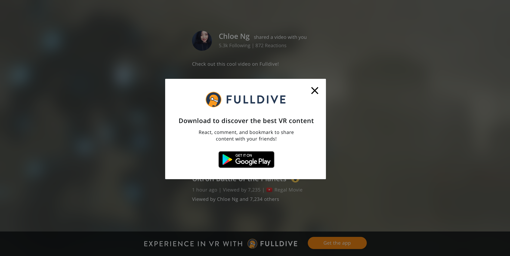

Fulldive is a mobile virtual reality startup that seeks to bring virtual reality to the hands and eyes of everyone. As of May 2017, we have over 4.1 million downloads and a 4.3 rating on Google Play. I worked as a UI/UX design intern at Fulldive summer 2016, and am currently a UI/UX designer there.
At its core, Fulldive seeks to make virtual reality content accessible. Part of this accessibility involves presenting people relevant VR content. However, VR still feels like a gimmick to many people. Though they may find it fun to play with, it has yet to be a destination for enjoying entertainment media. Our goal was to transform Fulldive into such a content destination.
I took ownership over the user research and usability testing for this project. These insights drove how I designed for specific features on the Fulldive VR platform.
To better understand the problem space, I conducted a user study on media consumption and sharing. I conducted several in-depth interviews and sent out a survey on Online Media Practices. In total, I gathered 40-50 responses and uncovered a range of motivations for media sharing.

We also ran a series of usability tests on the current Fulldive platform to surface prevalent pain points. These can be huge deterrants for usage on such platforms like mobile VR. Along the way, we learned many lessons about user testing for mobile VR.
General Insights
While much of my work is still confidential, here are some user experience challenges that I worked on.
How do we introduce new features to users?
Progressive onboarding introduces following in-context.
In-feed prompters can encourage users to take action within the flow of their experience.
A pulsing green dot can provide a handy tooltip for users.
Mini tutorials can guide users through specific flows.
How can we leverage sharing from the Fulldive platform?
When a user shares from the Fulldive platform, there's an opportunity for Fulldive to persuade new users to join.
Dark treatment
Light treatment
Modal when user interacts with social video controls